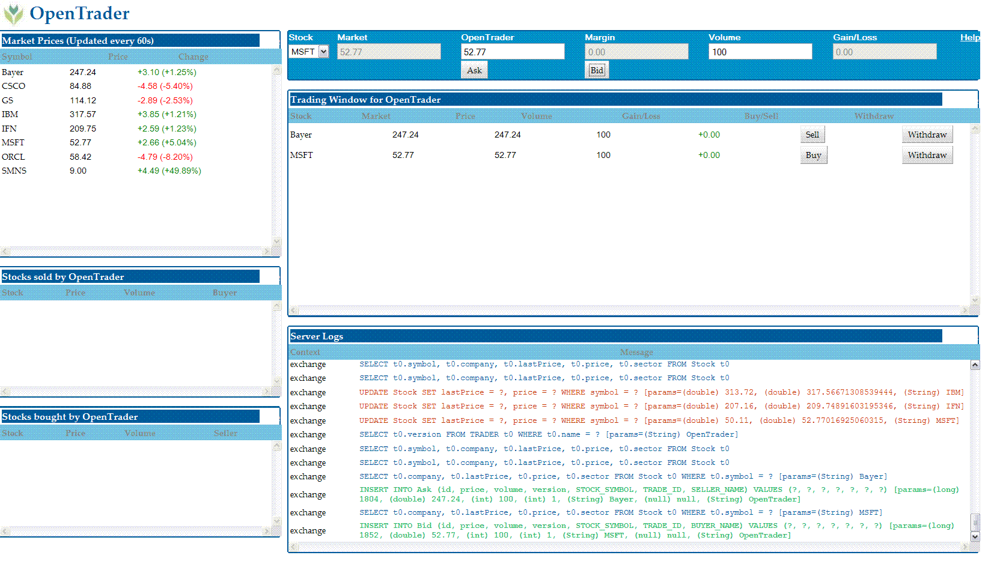

h1. OpenTrader: a transactional, web application with Google Web Toolkit, OpenJPA/Slice on Tomcat
OpenTrader is a sample web application to demonstrate integration of Google Web Toolkit (GWT) and OpenJPA running in Tomcat Servlet Container. These pages describe various aspects of this end-to-end application. The following sections are fairly independent of each other and can be followed as such based on your interest.
- Architecture and core design goals
- The computing environment requirement
- Developing a GWT Client
- Developing a JPA based Server
- Communication between the components
- Building the application
- Deploying the application
GWT takes a position that is a significantly unique among the multitude of frameworks available to build a browser based client. GWT framework is based on several key concepts:
- an asynchronous RPC protocol for communication between web client and server. Such asynchronous RPC is popularized by AJAX (Asynchronous JavaScript and XML) since last several years.
- a cross-compiler that converts Java to JavaScript. This is the most critical component in the framework as it allows the client be written completely in Java. Besides adding a comfort layer for Java developers, the cross-compiler solves one of the most complex issue of browser based clients namely cross-browser compatibility. The cross-compiler generates separate JavaScript targeted to prominent browsers and the framework knows to activate the appropriate JavaScript based on the particular browser a client is using.
- a library of interactive visual widgets such as dialog boxes, combo-boxes, tables etc. This Java based library realizes the widget as the elements of a Document Object Model (DOM) for a browser to render them in HTML. For example, an instance of com.google.gwt.user.client.ui.FlexTable urns into a <table> in the displayed HTML page by the framework. The widget library not only provides rendering support, it also comes with a event dispatching model for the client application to handle the user interaction.
OpenTrader - the sample example described in these pages - demonstrates how to develop a GWT client for a transactional, server application based on Java Persistence API (JPA). This example is somewhat more involved than a typical AddressBook example in terms of the complexity of the domain model, the transactional functions of the server as well as the interaction between multiple widgets in the client. Also the sample application covers a realistic use case where the core server application is defined independent of both GWT and JPA -- and then demonstrates how these two technologies are used to implement an end-to-end service running inside a Tomcat Servlet Container.
Follow the steps to view OpenTrader source code, build the application, deploy it in your favorite application container and run it in your favorite browser.
1. Get the source code¶
OpenTrader source code is available as one of the OpenJPA examples. Checkout the source files in a directory.
$ svn checkout https://svn.apache.org/repos/asf/openjpa/trunk/openjpa-examples/opentrader
The source tree comes with
- Ant build script: build.xml and build.properties
- Java source code for OpenTrader application under src/main/java
- GWT module descriptor : OpenTrader.gwt.xml under src/main/java/org/apache/openjpa/trader
- Persistence descriptor : persistence.xml under src/main/resources/META-INF
- web descriptor : web.xml under src/main/resources/WEB-INF
- cascading style sheet : OpenTrader.css under src/main/resources/css
2. Build¶
To build OpenTrader you will require following other libraries.
- Google Web Toolkit: We have built it with GWT version 2.0.4 which can be downloaded from here .
- cobogw widget library: Provides rounded panel not using them seems to be too un-cool. Download version 1.3.1 from here .
- and, of course, OpenJPA libraries: OpenJPA now comes with all its dependencies neatly packaged in a single jar including the JPA API. Download from this site .
2.1 Configure build environment¶
Edit build.properties to point to the dependent libraries you have downloaded. The file contains the instructions as comments.
2.2 Compile with Ant¶
Compile the application. Compilation involves three separate compilation process. First the plain old javac compilation. Followed by GWT cross-compiler that translates Java code into JavaScript. And finally OpenJPA compilation that adds few bytecodes to the persistent classes to manage their persistent behavior (which is also known as bytecode enhancement).
$ ant compile
GWT Compiler takes ages. Even though it only compiles for a single browser (FireFox). This is controlled by the following directives in the module descriptor OpenTrader.gwt.xml
<set-property name="user.agent" value="gecko1_8"/>
3. Run¶
You can run either in hosted mode - an environment provided by GWT to run within a Jetty container - or in a proper servlet container such as Tomcat, Geronimo or GlassFish or even heavy-duty ones such as WebSphere or Weblogic. In either case, you have to configure the persistence.xml found under src/main/resources/META-INF. This descriptor specifies the database used by OpenTrader.
<property name="openjpa.ConnectionDriverName" value="com.mysql.jdbc.Driver"/>
<property name="openjpa.ConnectionURL" value="jdbc:mysql://localhost/exchange"/>
<property name="openjpa.ConnectionUserName" value="whoami"/>
<property name="openjpa.ConnectionPassword" value="secret"/>
Also edit the jdbc.driver in build.properties for the driver/database you have selected.
Now, for hosted mode, simply fire Ant as
$ ant devmode
This should again take a very long time and pop open a horrible looking Swing console titled GWT Development Mode. Go to Development Mode tab and click Launch Default Browser. On my FireFox browser, that opens up the page http://127.0.0.1:8888/OpenTrader.html?gwt.codesvr=127.0.0.1:9997. If all goes well, at this point your browser will prompt you with a welcome dialog box
Once you have entered OpenTrader, the browser application looks like

In this page, you can place a trade offer to sell or buy some stocks. To really commit a trade you will need a matching offer. Now as a trader offer can only match to another trader's offer, you need to open another browser page with a different name. In FireFox, the tab will show the Trader name. Now if one Trader makes an offer that match another Trader's offer, then clicking the Sell or Buy button will commit the trade and will appear on the Trading History Window. Also notice the Server Log window. That will display SQL issued for every action by the server. You will also notice SQL being logged even if you are not pressing any buttons. Thatis because the Market Data Panel (the one in th etop-left corner) is refreshing the market prices for the Stocks by a periodic call to the server. As the stock prices change, that change is reflected on the gain/loss column of the waiting trade offers. All this dynamic partial update occurs in the same browser page -- that is what GWT offers.